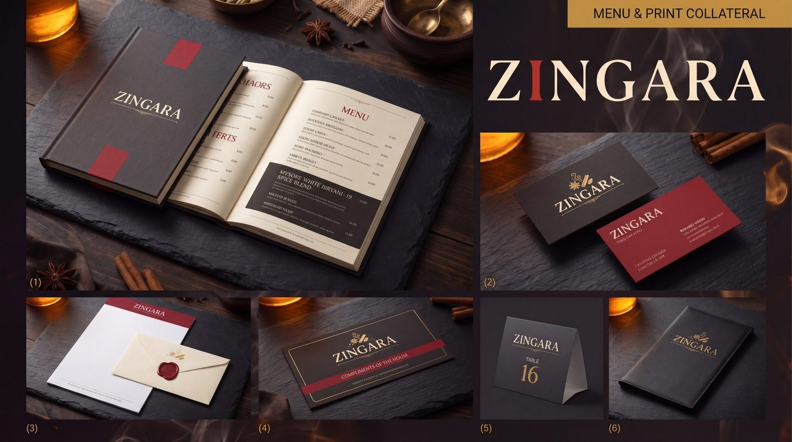
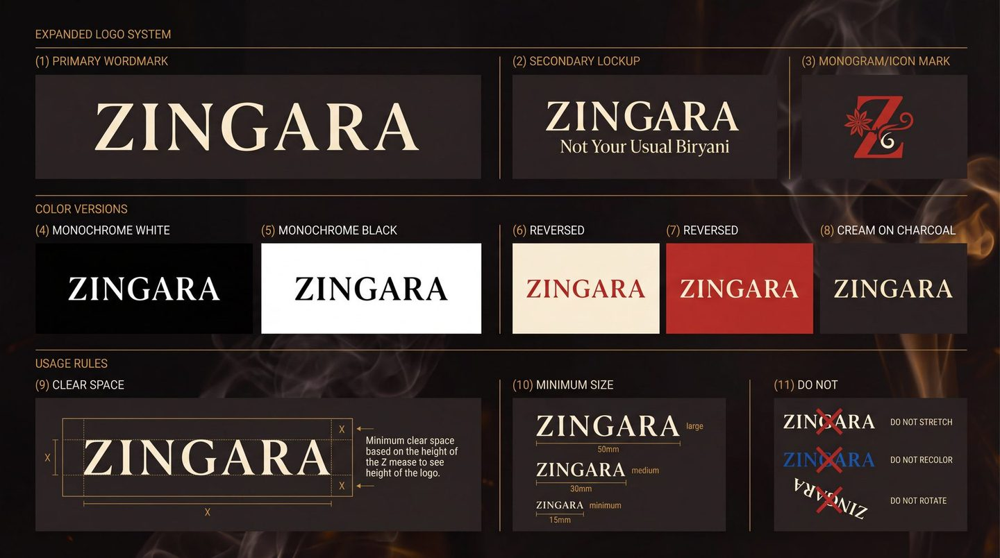
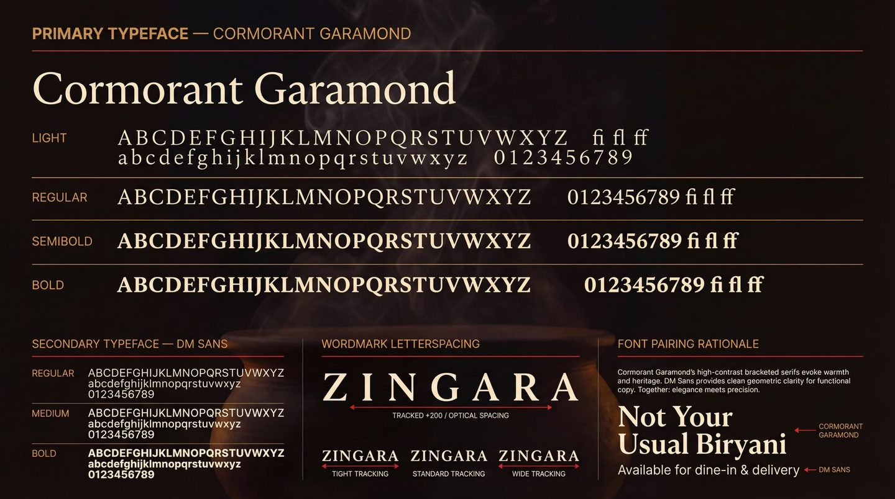
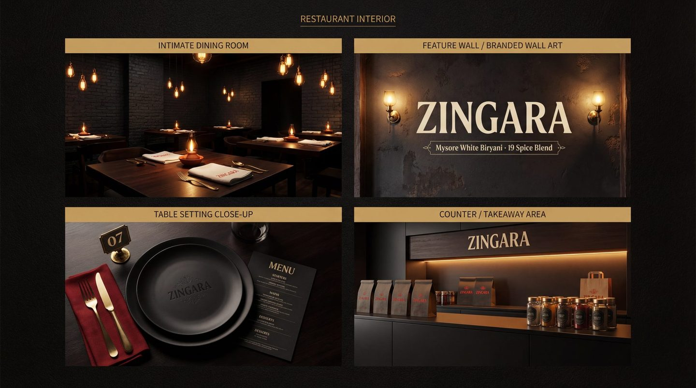
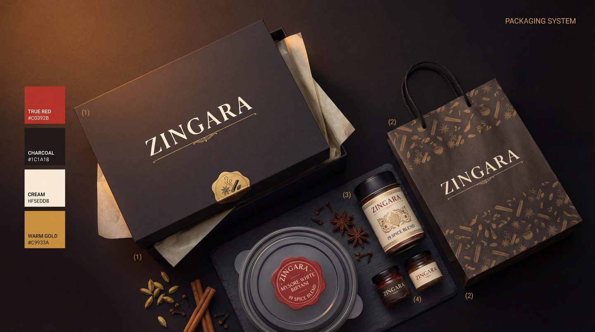
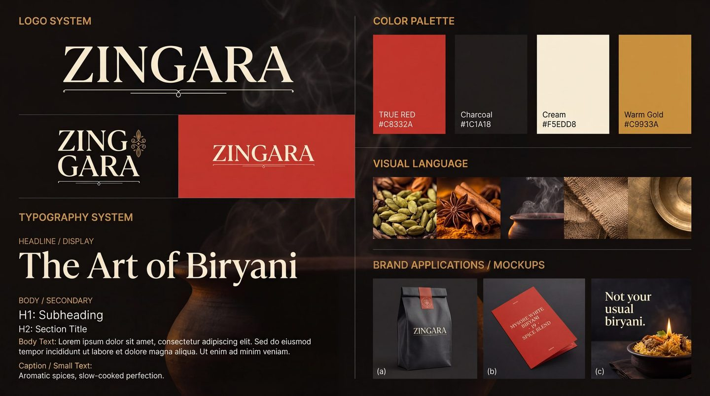
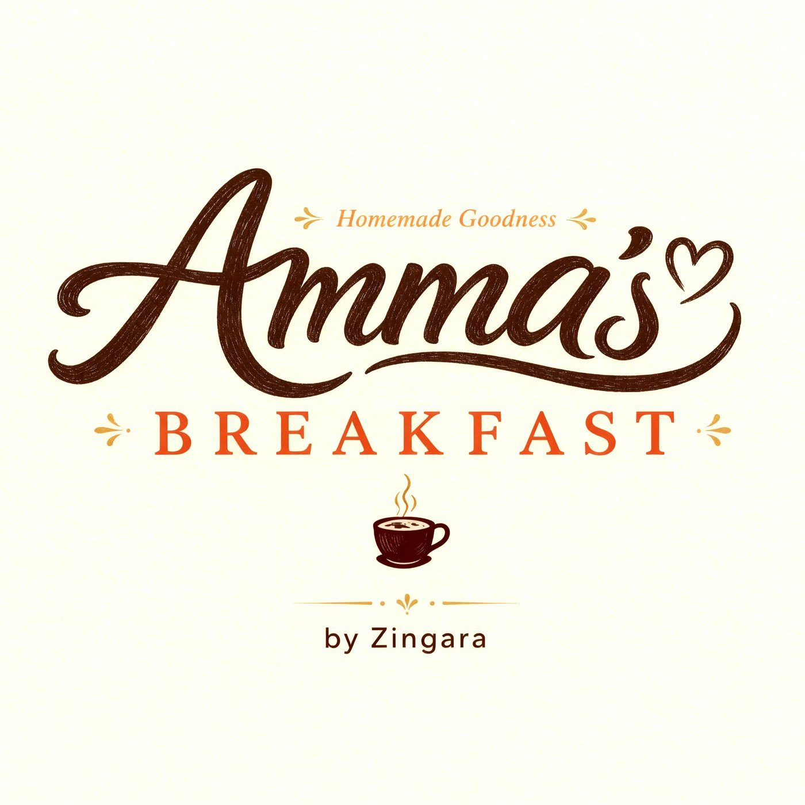

Case 01 · Restaurant · Bangalore
Zingara
It read like three restaurants.
One system, from the sign to the delivery bag. Every dish stayed.
The problem
The menu was costing them.
189 items set in four typefaces, prices that wandered down the page, listings that read like three different restaurants. Nothing was wrong with the kitchen.
- 189
- Items on the menu
- 4
- Typefaces in it
- 3
- Restaurants, in the listings

01 · The system
Decide it once.
A brand is a set of decisions you never have to make again. These are Zingara's, written down.
- Colour
-
#C8332A#1C1A18#F5EDD8#C9933A
- Type
- Cormorant GaramondDM Sans
- Ratio
- 60 / 20 / 10 / 10


02 · The fix
The menu, re-set.
Three faults, circled where they happen. Drag the line and watch them go.
- 01 Prices wandering down the page One column, and they hold it
- 02 Four typefaces, all shouting One, and it lets the food speak
- 03 A starburst doing the selling Gone. It was never the dish
- Charred Corn Lime Butter Charred corn Rs.249/- Lime butter, chilli salt
- Burrata Smoked Tomato Burrata Rs.420/- Smoked tomato, basil oil
- Pepper Prawns Curry Leaf Pepper prawns Rs.460/- Curry leaf, coconut
- Mushroom On Toast Mushroom on toast Rs.310/- Thyme, aged cheese
- Ghee Roast Chicken Ghee roast chicken Rs.540/- Mangalore spice, appam
- Lamb Shoulder Mint Lamb shoulder Rs.720/- Mint, slow fire
- Mysore White Biryani Mysore white biryani Rs.480/- Nineteen spices. No colour.
Reconstruction · the dishes are indicative
03 · It travels
A menu is not a document.
It is read at a table with the light down, and again on a box at the door with the light up. One decision, two distances.
-

01In the room -

02In the box
04 · On a screen
Where the orders are.
Dine-in is the room. Everything else is a phone. Site, order flow, social and the marketplace listings were treated as one surface.
One brand, four places
- The same dish names on the menu, the site, Swiggy and Zomato
- Petpooja items rewritten, so the kitchen ticket reads like the menu
- One light, one background, one photographic look
- The same Z avatar on every profile
What we stopped
- A different hero image per platform
- Discount badges burnt into the photography
- Three spellings of the same biryani
- Listings written by whoever onboarded them
05 · It extends
The real test.
Then they opened a breakfast place. Different letterforms entirely — and it still reads as family, because what it inherits is the colour and the discipline.


The numbers
What it did.
A beautiful brand that does not sell is decoration.
The first two as published on NUANSE's current site; the third counted from the delivered listings.
Scope
- Brand audit
- Identity & wordmark
- Type and colour system
- Brand icon set
- Menu system · 189 items
- Eight-pattern texture library
- Print & stationery
- Packaging & delivery livery
- Signage & interior graphics
- Website & order flow
- Swiggy & Zomato listings
- Petpooja item names
- Reels & social
- Amma's Breakfast sub-brand
- Guidelines people use